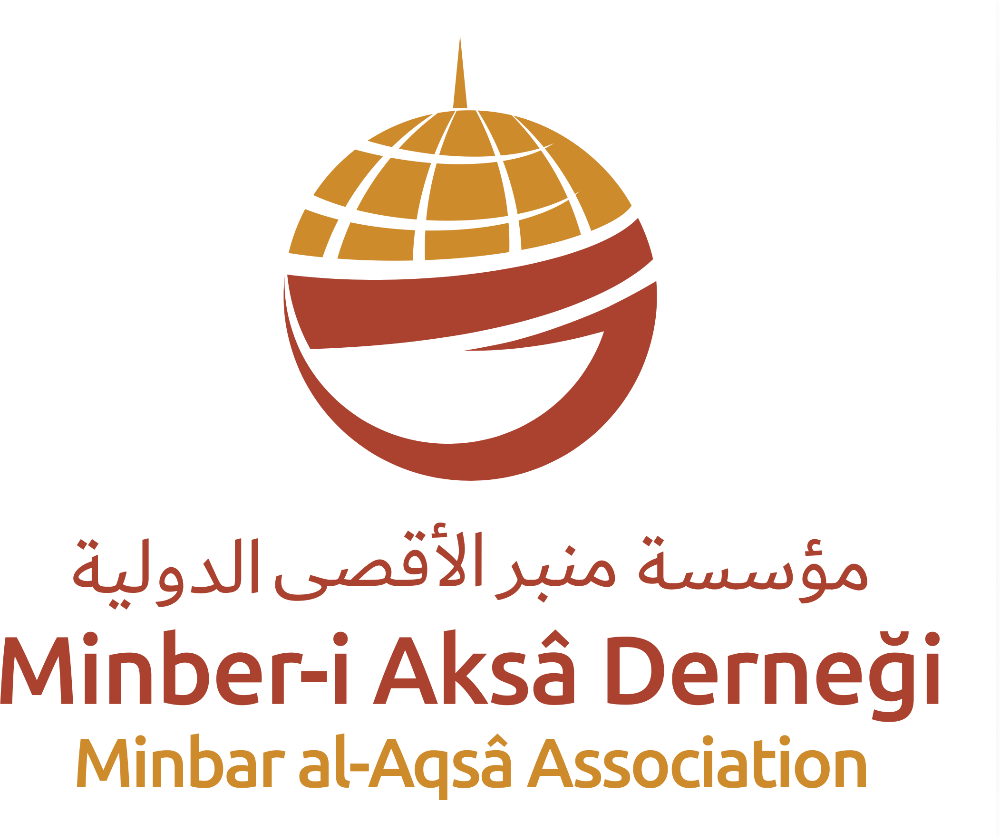

{{ tCertNoLabel }}
{{ certNo }}
{{ countLabel }}
{{ count }}


{{ tCertifiesThat }}
{{ donorName }}
{{ endowedLine }} ({{ count }})
{{ tValueLabel }}
{{ total }}
{{ tOnBehalfLabel }}
{{ onBehalf }}
{{ legalText }}
{{ certDate }}
{{ tDateLabel }}

 {{ tDirectorLabel }}
{{ tDirectorLabel }}


{{ aboutText }}